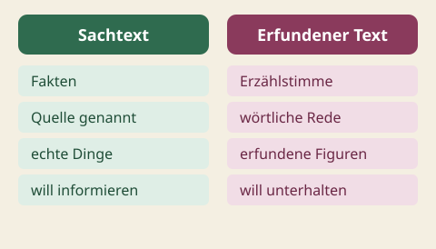

Sachtext oder erfundener Text
Mit einem KI-Tutor lernen
Ein KI-Tutor erklärt dir diese Seite und hilft dir bei den Aufgaben. Wähl deinen Assistenten:
Mit Claude öffnen Mit ChatGPT öffnen Mit Mistral Vibe öffnen
Du nutzt dein eigenes Konto beim Anbieter. Der Assistent ist kein Angebot von lernapps.net: lernapps liefert nur Inhalte und Aufgaben. Die Wahl gilt für alle Seiten, nur auf diesem Gerät.
Worum es geht
Nicht jeder Text in der Zeitung berichtet von Tatsachen. Manche Texte sind Sachtexte, andere sind erfunden (auf Englisch made up oder invented). Danach kannst du Sachtexte und erfundene Texte unterscheiden und typische Merkmale nennen.
Aufgabe
Lösung
Ein Sachtext, weil er in einem Buch gedruckt wurde
Auch erfundene Geschichten stehen gedruckt in Büchern. Der Ort sagt nichts darüber, ob ein Text wahr ist.
Ein erfundener Text, weil es keine Drachen gibt richtige Antwort
Der Drache ist erfunden, also ist auch der Text erfunden. Ein Sachtext spricht von echten Menschen, Tieren und Sachen.
Ein Sachtext, weil er nur ein paar kurze Sätze hat
Die Länge sagt nichts darüber, ob ein Text wahr ist. Kurze Geschichten sind auch erfunden.
Ein Text mit erfundenen Figuren ist ein erfundener Text, egal wo er steht und wie lang er ist.
Lesestück · Zwei Texte aus der Bibliothek
Lies den Chat und die zwei Texte in drei Abschnitten. Die Zahlen vor den Zeilen brauchst du bei den Aufgaben. Schwere Wörter stehen hier.
| Englisch | Deutsch |
|---|---|
| hive | der Bienenstock |
| wax | das Wachs |
| pollinate | bestäuben |
| crop | die Nutzpflanze |
| source | die Quelle |
| narrator | die Erzählstimme |
| fact | die Tatsache |
- Peter: I found two texts in the school library. Both are about bees.
- Sophie: Are they the same kind of text?
- Peter: Read them and decide.
- Text A: Honey bees
- Honey bees live together in a nest called a hive. The inside of the hive has small cells made of wax.
- Bees make honey, and people keep bees for it. Farmers also use honey bees, because the bees pollinate their crops.
- People use the wax from the hive too, for example for candles.
- Source: a book about bees from the school library
Aufgabe
Lösung
Sie leben zusammen in einem Nest richtige Antwort
So steht es in Zeile 5: Honey bees live together in a nest called a hive.
Sie machen selbst Kerzen aus ihrem Wachs
Zeile 7 sagt, dass die Menschen das Wachs für Kerzen benutzen, nicht die Bienen.
Sie bleiben bei Regen im Nest und erzählen Geschichten
Das steht in Text B, der erfunden ist. Text A nennt nur Tatsachen.
Text A beschreibt, wo Honigbienen leben und wozu Menschen sie nutzen.
- Text B: Buzz and the Rainy Day
- Buzz was a small bee with a big smile. One rainy morning she looked out of the hive and felt sad.
- “I hate the rain,” she said. “I cannot fly in it, and I want to see the flowers!”
- Her friend Bo the bee laughed. “Come inside, Buzz. Let us tell stories.” So the two friends told stories in the warm hive, and Buzz forgot about the rain.
Aufgabe
Lösung
Zeile 10 nennt eine Biene mit Namen und einem Lächeln richtige Antwort
Richtig: Buzz ist eine erfundene Figur. Echte Bienen haben keine Namen.
Zeile 11 enthält wörtliche Rede richtige Antwort
Richtig: Buzz spricht in Anführungszeichen. Eine erfundene Figur, die spricht, gibt es nur in einer Geschichte.
Zeile 8 nennt die Quelle des Textes
Zeile 8 gehört zu Text A. Eine Quelle ist ein Merkmal des Sachtextes.
Eine erfundene Figur und wörtliche Rede zeigen, dass Text B eine Geschichte ist.
- Sophie: Text A tells us facts and names its source. Text B has a story with names.
- Peter: And in text B somebody speaks. That never happens in text A.
Offene Aufgabe
Welcher Text gefällt dir besser, Text A oder Text B, und warum? Schreibe zwei bis drei Sätze auf Englisch.
Eine gute Antwort enthält:
- Du nennst einen der beiden Texte. Nachlesen
- Du gibst einen Grund mit because. (Form)
- Du schreibst in ganzen Sätzen. (Form)
Lösung
I like text B better because it is a funny story. I like Buzz and her friend. Die App bewertet deinen Text nicht. Vergleiche ihn mit den Punkten.
Die Merkmale der zwei Textarten

© CC-BY-4.0Die zwei Spalten im Vergleich. Achte darauf, was in der linken und was in der rechten Spalte steht.
Ein Sachtext will informieren. Er nennt Fakten, oft eine Quelle (source) und spricht von echten Menschen, Tieren und Sachen. Ein erfundener Text will unterhalten. Eine Erzählstimme (narrator) erzählt, die Figuren sind erfunden und sprechen in wörtlicher Rede. Auch ein Sachtext kann ein Zitat einer echten Person enthalten, aber eine erfundene Figur spricht dort nie.
Merke
Fakten und Quelle: Sachtext. Erzählstimme, erfundene Figuren und ihre wörtliche Rede: erfundener Text.
Übung
Aufgabe
Lösung
Richtige Antwort: Source: a book about dogs from the library – Quelle genannt; “Wait for me!” shouted the little dog. – wörtliche Rede; Rex the dog was brave and a little bit silly. – erfundene Figur; Many people keep honey bees for their honey. – Fakt
Eine Quelle und ein Fakt gehören zum Sachtext. Wörtliche Rede und eine erfundene Figur gehören zur Geschichte.
Aufgabe
Lösung
Eine Figur denkt in wörtlicher Rede richtige Antwort
Richtig: “Nobody can see me” sind die Gedanken der Figur in Anführungszeichen.
Eine Erzählstimme sagt, was die Figur tut richtige Antwort
Richtig: Der Erzähler sagt, dass Max in den Garten ging und lächelte.
Der Text nennt eine Quelle
Unter dem Text steht keine Quelle. Eine Quelle gehört zum Sachtext.
Der Text besteht nur aus Fakten
Ein Fuchs, der denkt und lächelt, ist erfunden. Das ist keine Tatsache.
Eine Figur mit Namen, wörtliche Rede und eine Erzählstimme sind Merkmale eines erfundenen Textes.
Aufgabe
Lösung
Richtige Antwort: Die Aussage stimmt nicht.
Auch in einer Zeitung kann ein erfundener Text stehen. Ob ein Text wahr ist, prüfst du an Fakten und Quelle.
Aufgabe
Lösung
Richtige Antwort: Die Aussage stimmt nicht.
Ein Sachtext spricht von echten Tieren, Menschen und Sachen. Eine sprechende Biene in wörtlicher Rede gehört in eine erfundene Geschichte.
Aufgabe
Höre den Satz und schreibe ihn auf.
- KI
- KI
- KI
Lösung
- A factual text gives information about animals.
- The author of a story invents the characters.
- Every article should name its sources properly.
Die Sätze zeigen, wie man über Textarten spricht.
Selbst sprechen und schreiben
Aufgabe
Höre die Sätze und sprich sie nach. So sprichst du über Textarten.
- This story is about a fox and a rabbit.KI
- I think the second text is invented.KI
- Is this a true report or an invented story?KI
Zum Aufnehmen braucht diese Aufgabe JavaScript. Die Beispiele kannst du auch ohne anhören.
Lösung
- This story is about a fox and a rabbit.
- I think the second text is invented.
- Is this a true report or an invented story?
Offene Aufgabe
Schreibe eine Merkmalsliste auf Englisch: drei Merkmale eines Sachtextes und drei Merkmale einer erfundenen Geschichte. Kurze Stichpunkte reichen.
Eine gute Antwort enthält:
Lösung
Non-fiction text: facts, a source, real things and people. Story: a narrator, invented characters, speech.
Die App bewertet deinen Text nicht. Vergleiche ihn mit den Punkten.
Wie es weitergeht
Du kannst die zwei Textarten unterscheiden. Auf der nächsten Seite machst du aus einer Geschichte einen Bericht für die Zeitung.
Fehler gefunden oder eine Idee für diese App?